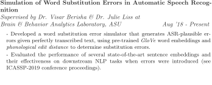
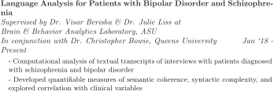
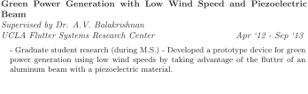
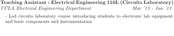
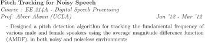

Curriculum Vitae of Rohit Voleti
Last Update: May 23, 2019

Rohit Voleti
(Curriculum Vitae)
| Ph.D. Student, Electrical Engineering | Arizona State University School of Electrical, Computer, & Energy Engineering |
|
| Office: | Lattie F. Coor Hall 3427, Tempe Campus | |
| E-mail: | rnvoleti@asu.edu | rvoleti89@gmail.com | |
| Github: | https://www.github.com/rvoleti89 | |
| LinkedIn: | https://www.linkedin.com/in/rohitvoleti/ |
Research Interests
Natural Language Processing
Statistical Signal Processing
Machine Learning/Deep Learning
Speech Signal Processing
Education
-
Arizona State University, Tempe, AZ Aug `16 - Present
Ph.D., Electrical Engineering
Advised by: Dr. Visar Berisha & Dr. Julie Liss
Signal Processing Research Area with focus on Speech & Language
University of California, Los Angeles, Sept `11 - Dec `13
M.S., Electrical Engineering
Advised by: Dr. A.V. Balakrishnan
Signals & Systems Research Area
M.S. Project: Addressing Source Localization of EEG data using the Minimum Norm Estimate and the FieldTrip Software Package in MATLAB.
University of California, Los Angeles, Sept `06 - Dec `10
B.S., Electrical Engineering
Biomedical Engineering Focus
Fellowships & Honors
-
Dean's Fellowship, Ira A. Fulton Schools of Engineering 2016-2020
(awarded to 4% of ASU doctoral students)
Fulton Fellowship, Ira A. Fulton Schools of Engineering 2016-2017
Employment Summary
-
Arizona State University
Aug `16 - Present
Tempe, AZ

Becton Dickinson (CareFusion)
Jun `14 - Jul `16
San Diego, CA
Advanced Bionics
Jun `10 - Sep `11 and Sep `12 - May `13
Valencia, CA
Research Activities




Peer-Reviewed Publications
Conference Proceedings
Published:
-
R. Voleti, J. M. Liss, and V. Berisha, ``Investigating the Effects of Word Substitution Errors on Sentence Embeddings'', in ICASSP 2019 - 2019 IEEE International Conference on Acoustics, Speech and Signal Processing (ICASSP), 2019, pp. 7315-7319.
Paper (IEEE Xplore), arXiv:1811.07021
Submitted & Under Review:
-
R. Voleti, S. Woolridge, J. M. Liss, M. Milanovic, C. R. Bowie, and V. Berisha, ``Objective Assessment of Social Skills Using Automated Language Analysis for Identification of Schizophrenia and Bipolar Disorder'', submitted to ISCA INTERSPEECH 2019 in Graz, Austria, 2019.
pre-print @ arXiv:1904.10622
Journal Articles
Published:
-
M. Muztoba, R. Voleti, F. Karabacak, J. Park, and U. Y. Ogras, ``Instinctive Assistive Indoor Navigation using Distributed Intelligence,'' ACM Transactions on Design Automation of Electronic Systems, vol. 23, no. 6, pp. 80:1-21, Nov. 2018.
Paper (ACM Digital Library)
Submitted & Under Review:
-
R. Voleti, J.M. Liss, and V. Berisha, ``A Review of Language and Speech Features for Cognitive-Linguistic Assessment'', submitted to IEEE Journal of Selected Topics in Signal Processing - Special Issue on Automatic Assessment of Health Disorders Based on Voice, Speech and Language Processing, planned for Feb. 2020.
Teaching & Education Experience

Selected Course Projects

Skills & Certifications
-
Programming Languages: Python, Matlab, C, C++, LATEX, Bash, LabView, Simulink
Python packages for ML & NLP: numpy, pandas, scipy, pytorch, tensorflow, scikit-learn, nltk, gensim
Operating Systems: Linux, Windows, Mac OS
Certifications: Design for Six Sigma (DFSS) Practitioner
Memberships: IEEE, IEEE Young Professionals, IEEE Signal Processing Society
References
-
Available upon request.
About this document ...
This document was generated using the LaTeX2HTML translator v2019
Copyright © 1993, 1994, 1995, 1996,
Nikos Drakos,
Computer Based Learning Unit, University of Leeds.
Copyright © 1997, 1998, 1999,
Ross Moore,
Mathematics Department, Macquarie University, Sydney.
The command line arguments were:
latex2html -no_math -html_version 3.2,math -split 0 cv.tex
The translation was initiated by Rohit Voleti on 2019-05-23